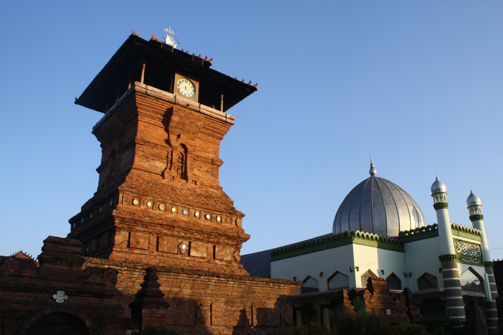
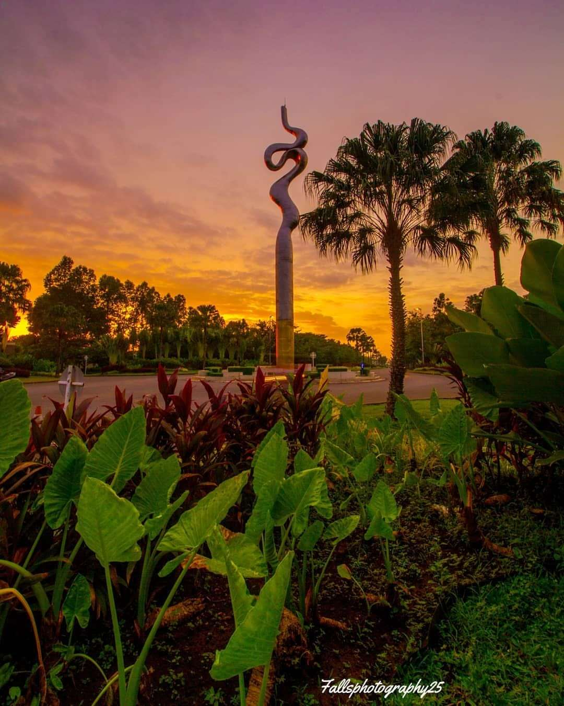
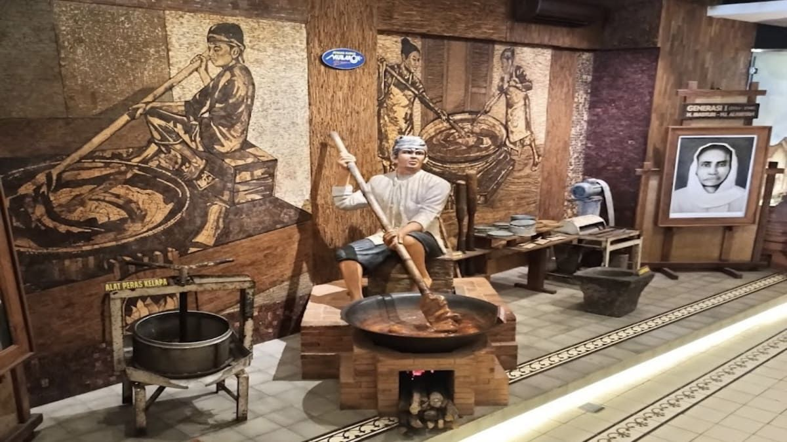

Welcome to Tourist Place
Aku akan merekomendasikan tempat yang harus kau tuju saat kau ada di kudus
Menara Kudus
Salah satu destinasi yang harus dikunjungi khususnya orang muslim, karena di Menara Kudus juga sebagai makam Sunan Kudus

Djarum Oasis
Tidak ada yang tidak tahu tentang grup Djarum, ini merupakan salah satu pabrik rokok Djarum yang bagian depan pabriknya merupakan taman yang besar dan indah serta banyak anak muda kesini unutk menikmati senja dan olahraga.

Museum Jenang
Nah...Kalau ini belajar sejarah kota Kudus dari jenang hingga rokok serta awal mula kota Kudus

Nah itu menurutku tempat yang harus kamu kunjungin saat di kudus, Jika kamu lebih lama lagi mungkin aku akan memeberi tahu lebih banyak lagi